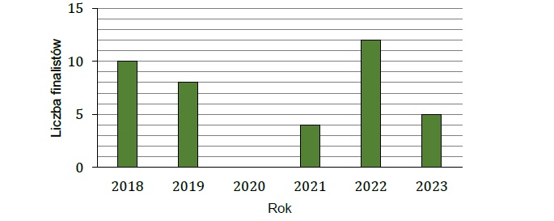
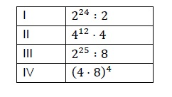
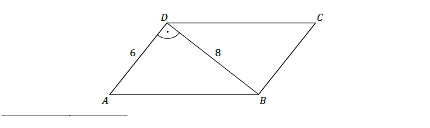
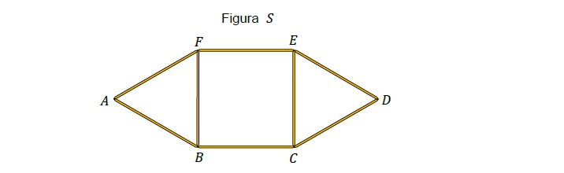

Zadanie 1
Na stronie internetowej szkoły zamieszczono diagram słupkowy przedstawiający liczbę finalistów konkursów przedmiotowych z sześciu kolejnych lat.

Dokończ zdanie. Wybierz właściwą odpowiedź spośród podanych.
Średnia roczna liczba finalistów w okresie tych sześciu lat była równa
Zadanie 2
Kwotę \( 1800 \) złotych przeznaczoną na nagrody w pewnym konkursie podzielono na trzy części w stosunku \( 6 : 3 : 1 \), odpowiednio: za I, za II i za III miejsce.
Uzupełnij zdania. Wybierz odpowiedź spośród oznaczonych literami A i B oraz odpowiedź spośród oznaczonych literami C i D.
Wartość nagrody za III miejsce jest równa
Wartość nagrody za I miejsce jest razy większa od wartości nagrody za II miejsce.
Zadanie 3
Dokończ zdanie. Wybierz właściwą odpowiedź spośród podanych.
Rozwiązaniem równania \( 3(x + 2) = 6 - (x - 1) \) jest liczba
Zadanie 4
W tabeli zapisano cztery wyrażenia arytmetyczne:

Które z tych wyrażeń ma największą wartość? Wybierz właściwą odpowiedź spośród podanych.
Zadanie 5
W pewnej liczbie czterocyfrowej suma cyfr jest równa \( 3 \).
Ile jest liczb czterocyfrowych spełniających ten warunek? Wybierz właściwą odpowiedź spośród podanych.
Zadanie 6
Dane jest wyrażenie arytmetyczne \( \frac{\sqrt{100}-\sqrt{36}}{\sqrt{-8}} \)
Dokończ zdanie. Wybierz właściwą odpowiedź spośród podanych.
Wartość podanego wyrażenia jest równa
Zadanie 7
Trzy kolejne liczby naturalne można zapisać w postaci: \( 𝑛, (𝑛 + 1), (𝑛 + 2). \)
Dokończ zdanie. Wybierz właściwą odpowiedź spośród podanych.
Suma każdych trzech kolejnych liczb naturalnych jest liczbą podzielną przez
Zadanie 8
Poniżej przedstawiono kalendarz na kwiecień w pewnym roku.

Uzupełnij zdania. Wybierz odpowiedź spośród oznaczonych literami A i B oraz odpowiedź spośród oznaczonych literami C i D.
Prawdopodobieństwo, że wybrany dzień tego miesiąca to wtorek, jest równe
rawdopodobieństwo, że numer wybranego dnia tego miesiąca będzie liczbą podzielną przez C\D jest równe \( \frac{2}{15} \)
Zadanie 9
Dane są cztery wyrażenia arytmetyczne: \(I. 1-2\frac{2}{3}\cdot3 ,\quad II. 3,4-2\frac{1}{4}, \quad III. 3\frac{3}{4}-4,25, \quad IV.6:1,2 \).
Dokończ zdanie. Wybierz właściwą odpowiedź spośród podanych.
Liczbami całkowitymi są wartości wyrażeń
Zadanie 10
Ala wyruszyła na wycieczkę rowerową o godzinie 11 : 40. Przejechała trasę o długości 28 km i dotarła do celu tego samego dnia o godzinie 13 : 00.
Dokończ zdanie. Wybierz właściwą odpowiedź spośród podanych.
Prędkość, z jaką Ala na rowerze pokonała trasę wycieczki, była równa
Zadanie 11
W prostokątnym układzie współrzędnych (𝑥, 𝑦) dane są odcinki 𝐴𝐵 oraz 𝐶𝐷. Końcami tych odcinków są – odpowiednio – punkty: 𝐴 = (0, 0), 𝐵 = (0, 4) oraz 𝐶 = (−2, 0), 𝐷 = (6, 0).
Oceń prawdziwość podanych zdań. Wybierz P, jeśli zdanie jest prawdziwe, albo F – jeśli jest fałszywe.
Odcinek 𝐴𝐵 ma taką samą długość jak odcinek 𝐶𝐷.
Odcinek 𝐴𝐵 jest prostopadły do odcinka 𝐶𝐷.
Zadanie 12
Bok 𝐴𝐷 równoległoboku \(𝐴𝐵𝐶𝐷\) ma długość 6, a przekątna 𝐵𝐷 prostopadła do tego boku ma długość 8 (zobacz rysunek).

Dokończ zdanie. Wybierz właściwą odpowiedź spośród podanych.
Obwód równoległoboku \(𝐴𝐵𝐶𝐷\) jest równy
Zadanie 13
Z ośmiu jednakowych patyczków zbudowano figurę 𝑆 (zobacz rysunek). Ta figura ma dwie osie symetrii w płaszczyźnie rysunku.

Oceń prawdziwość podanych zdań. Wybierz P, jeśli zdanie jest prawdziwe, albo F – jeśli jest fałszywe.
Po usunięciu z figury 𝑆 patyczków 𝐴𝐹 i 𝐴𝐵, bez przesuwania pozostałych patyczków, otrzymamy figurę, która ma jedną oś symetrii.
Po usunięciu z figury 𝑆 patyczka 𝐹𝐸, bez przesuwania pozostałych patyczków, otrzymamy figurę, która nie ma osi symetrii.
Zadanie 14
Na rysunku przedstawiono siatkę pewnego sześcianu. Obwód tej siatki jest równy 70 cm.
Dokończ zdanie. Wybierz właściwą odpowiedź spośród podanych.
Pole powierzchni całkowitej tego sześcianu jest równe